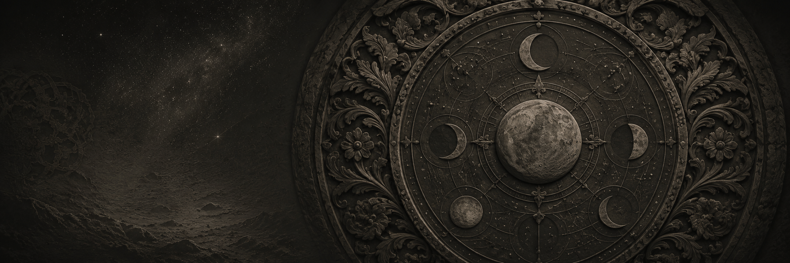
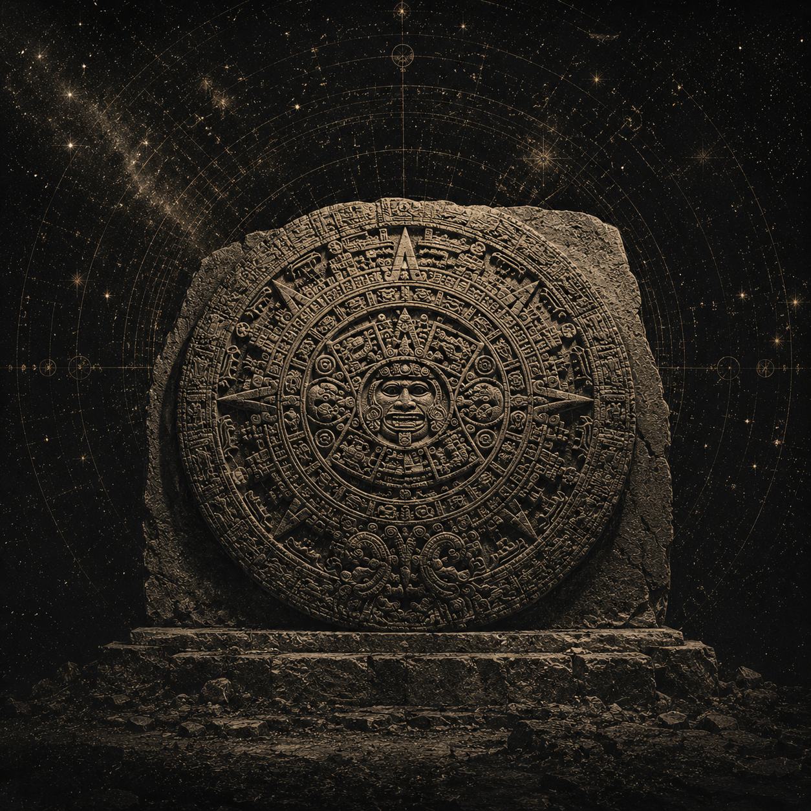
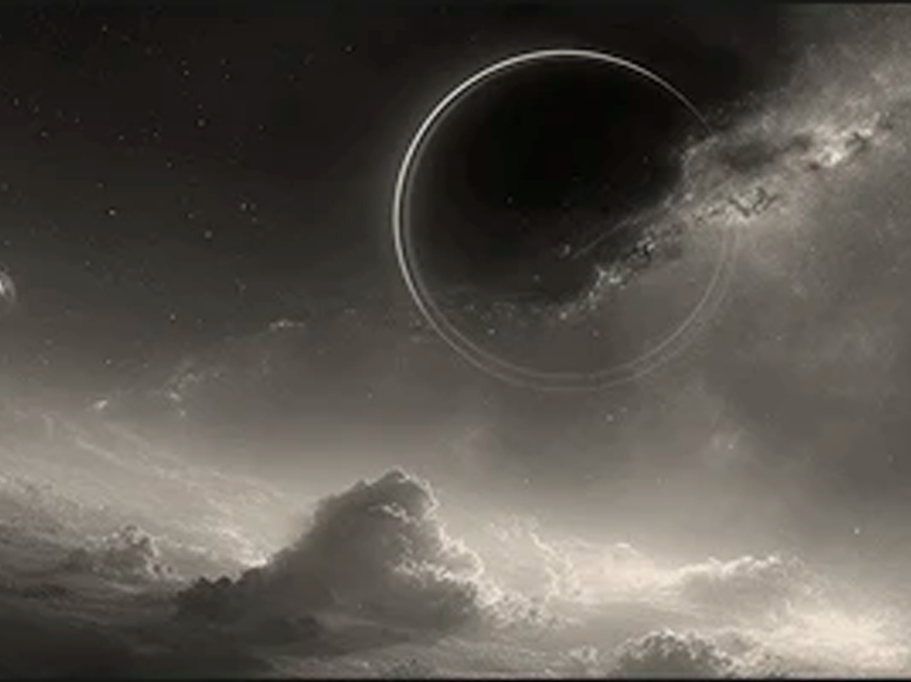

Архив наблюдений · 0—4 · π—3 · Re(s)=½
Контуры числа
Исследовательская обсерватория: от круга и остатка π — к четырём фазам, простым числам, масштабу и критической линии.
Материалы проекта
Четыре точки входа
Читайте ход мысли последовательно или сразу переходите к интерактивным моделям.
От нуля и четвёрки к дзета-функции
Полная запись наблюдений, вычислений, неудачных продолжений и устойчивых математических связей.
Интерактивный CanvasЗодиак, π и нули Римана
Вращаемая трёхмерная карта слоёв без WebGL: окружность, спираль, простые фазы и критическая линия.
Plotly-экспериментЧисленная лаборатория
Интерактивная 3D-сцена, таблица сравнения и воспроизводимый Python-скрипт.
Авторская модельОт круга к критической линии
Отдельная линия рассуждения о круге, остатке π, зодиакальной системе, матрице и операторе масштаба.
Визуальный язык
Атлас наблюдений
Лунный камень, старые небесные карты и бронзовая разметка объединяют статьи и вычислительные модели в один архив.


